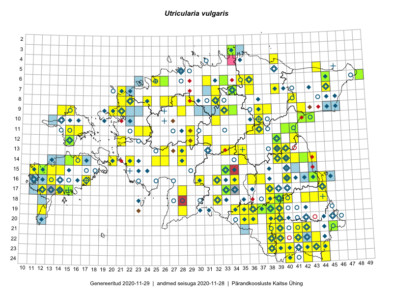

Utricularia vulgaris
Uuendatud: 2016-12-01
Kaardile koondatud taksonid: Utricularia vulgaris L.

Kaart põhineb 53 kirjel, neist vaatlusi 47 ja eksemplare 6.
Kuvatud viited 20 esimesele andmebaasikirjele, ülejäänud PlutoFis
- Malle Leht: 2015-07-09: : ala
- Toomas Kukk, Eerik Leibak: 2015-08-09: 14-15: ala
- Toomas Kukk, Eerik Leibak: 2015-08-10: 09-14: ala
- Tiit Hallikma, Indrek Tammekänd, Toomas Kukk: 2015-06-09: 12-29: ala
- Peedu Saar: 2015-07-04: 18-44: ala
- Toomas Kukk, Tiit Hallikma: 2015-06-11: 11-29: ala
- Peedu Saar, Ott Luuk: 2015-08-13: 24-42: ala
- Tõnu Feldmann, Katrit Karus: 2015-07-31: 16-32: ala
- Peedu Saar: 2015-08-22: 11-41: ala
- Ott Luuk, Meeli Mesipuu: 2015-07-20: 08-41: ala
- Katrit Karus, Tõnu Feldmann: 2015-08-03: 13-35: ala
- Katrit Karus, Tõnu Feldmann: 2015-08-05: 13-35: ala
- Katrit Karus, Tõnu Feldmann: 2015-08-05: 13-34: ala
- Katrit Karus, Tõnu Feldmann: 2015-08-05: 13-34: ala
- Katrit Karus, Tõnu Feldmann: 2015-08-06: 09-33: ala
- Katrit Karus, Tõnu Feldmann: 2015-08-07: 07-34: ala
- Toomas Kukk, Kersti Tambets, Timo Luhamäe, Janika Sammasto, Sten Mander: 2014-07-29: 18-42: ala
- Jana-Maria Habicht, Ester Valdvee: 2015-07-20: 07-34: ala
- Jana-Maria Habicht, Ester Valdvee, Kirke Pilvik: 2015-07-25: 09-34: ala
- Eeva-Maria Jeletsky, Tarmo Niitla: 2015-06-22: 11-16: ala